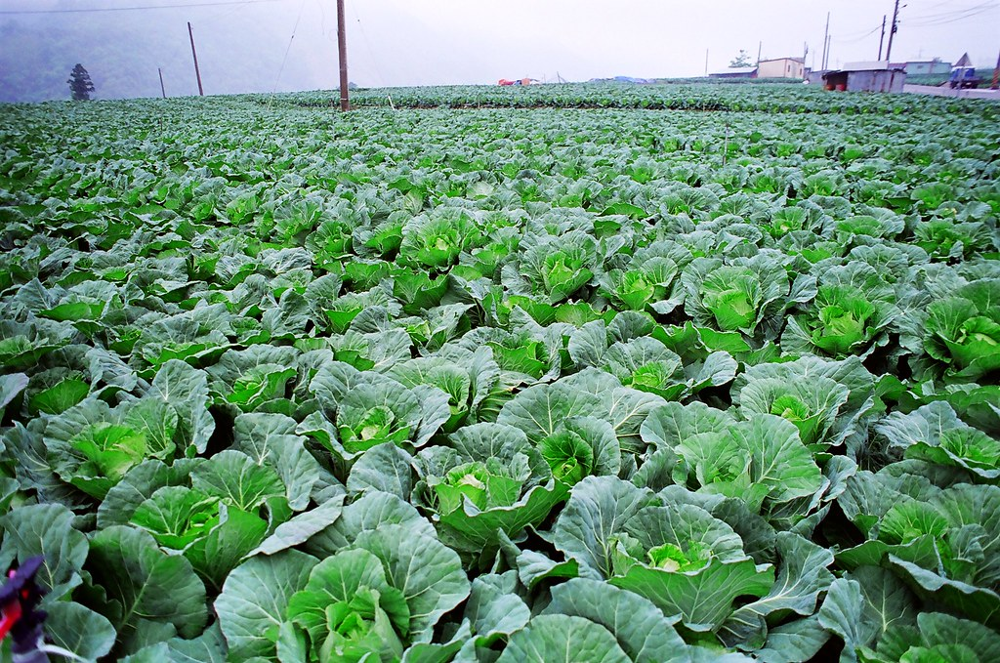

來認養一塊田吧!
但什麼是認養農田呢？
認養農田是以消費者先支付一定金額，來預購一塊土地上的作物，這些金額會用在種苗、有機肥料肥料等種植支出，也作為農家的部分收入。
對於消費者來說，可以收到無農藥、化學肥料的農產品，了解吃到的蔬果是怎麼生產出來的，讓人吃得更加安心，也能在種植、採收期間， 到田野間體驗農業生活。
對於消費者來說，可以收到無農藥、化學肥料的農產品，了解吃到的蔬果是怎麼生產出來的，讓人吃得更加安心，也能在種植、採收期間，到田野間體驗農業生活。 對農家而言，能夠保障產品不受市場價格波動大而血本無歸、不肖盤商的層層剝削，更有意願使用對環境友善的農法。
最後，台灣的農業因人口老化而廢耕率日漸增加，也習慣為了增加產量而大量使用農業、化學、合成肥料，破壞土地的平衡 讓植物更難以生長。認養農田能幫助台灣廢耕多年的土地重生，讓過度施肥與農藥的土地可以有恢復地力的機會。
|  |  |
 |
 |
 |
|
 |
 |
這要怎麼做到呢?
在現行的大部分農業中，農民因為售價低，所以希望最大化產量，而大量施用肥料與農藥；但有能力負擔的消費者希望吃得健康和安心， 可是又不知道、不知道吃那些是好、值得信任的，所以不願意付更高的價格來購買產品。
在這個機制中，農家會需要改變種植與銷售習慣，從追求產量、賣給盤商再到到品質為重、直接由消費者購買，並且農家要記錄栽種過程 、營養成分與價值，與消費者分享，讓消費者與農家間產生信任感。藉由互動，消費者能瞭解農民的辛苦與心血，也能知道農產品來源的品質 ；對農民來說，可以瞭解消費者需求及想法，以產品直送的方式，為農人增加獲利機會。
透過雙方互動，增加消費溫度，建立情感連結和知識的流動，讓消費者與農家能信任彼此，滿足雙方的需求。
和我們合作的農家
地區
生產者
種植品項
種植面積
與Agri- Culture合作的農家，其使用的農法、肥料、農產品都經過Agri- Culture的認證與通過國家殘留物檢測， 也都使用有機農法，Agri- Culture與合作的農家認為食品應該是要健康、安全、無毒的，我們追求質量大於產量， 我們願意使用更自然的方式，不耗盡地力、不毒害土地、與養育我們的土地共存共榮，並存有一份感激之心。除了現行農法外 ，Agri- Culture與農家也積極與農試所合作，尋找更為適合土地、適合農家的生產方式。
不論您是消費者或農家，只要您認同我們的理念，歡迎您加入我們！